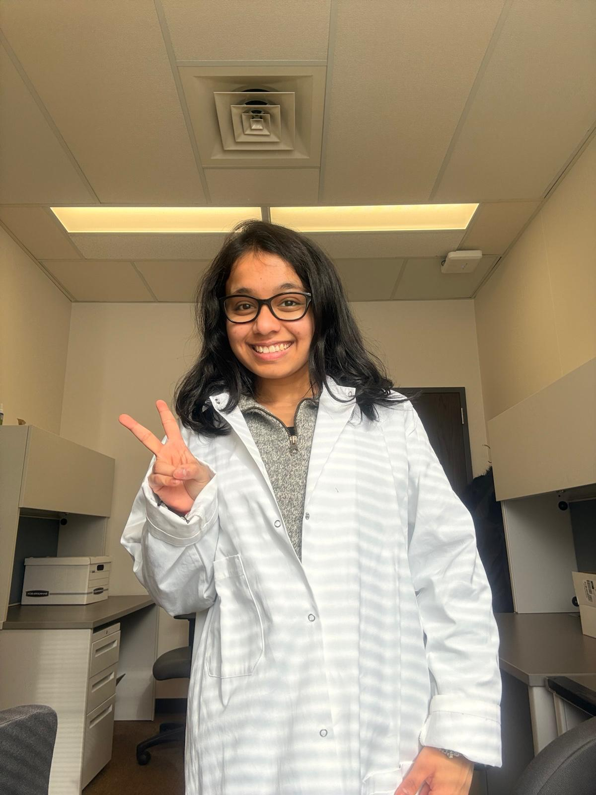
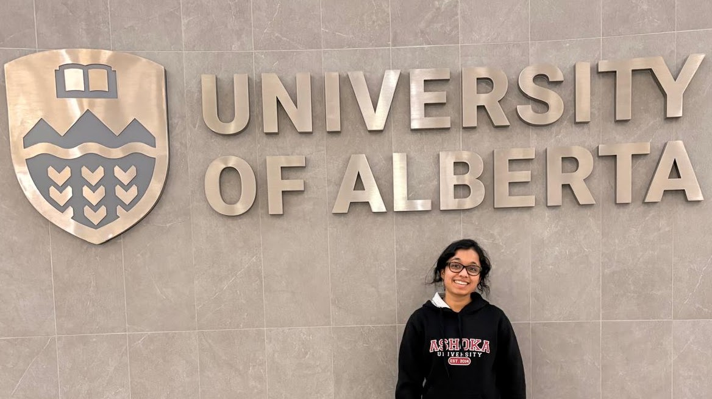
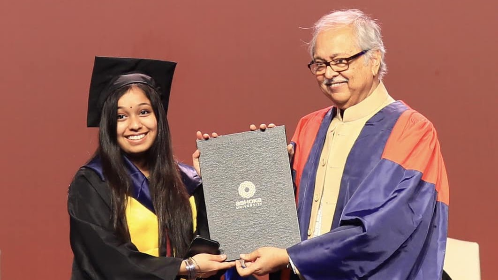

May 2026
Awarded with the Student Elevation Award at the University of Alberta

September 2025
Joined the SeaSoN Lab at the University of Alberta for doctoral training
September 2025
Graduated with a Master's in Applied Neuropsychology from the University of Bristol with Distinction

May 2024
Graduated with a Post Graduate Diploma in Advanced Studies and Research (Psychology) from Ashoka University
May 2023
Graduated with a Bachelor of Science in Psychology from Ashoka University